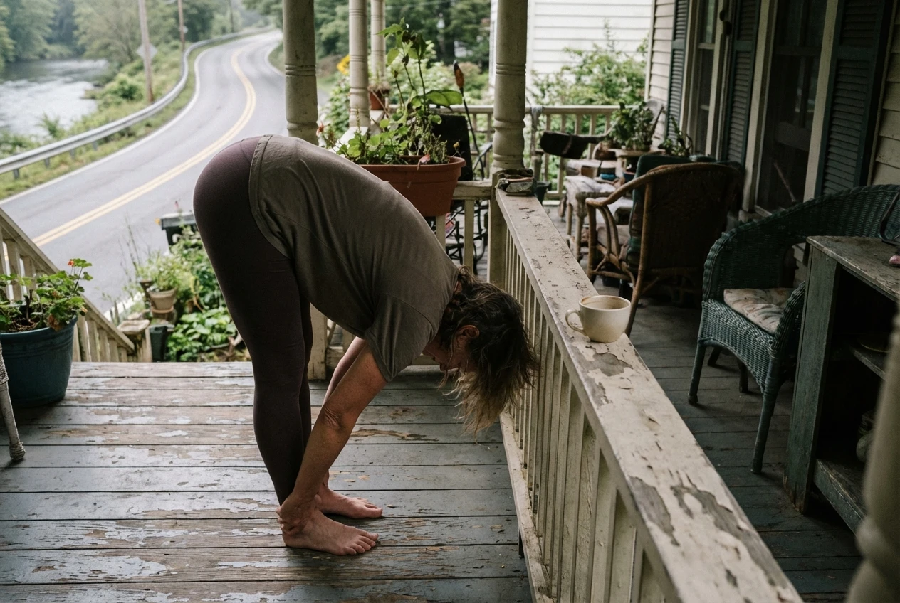
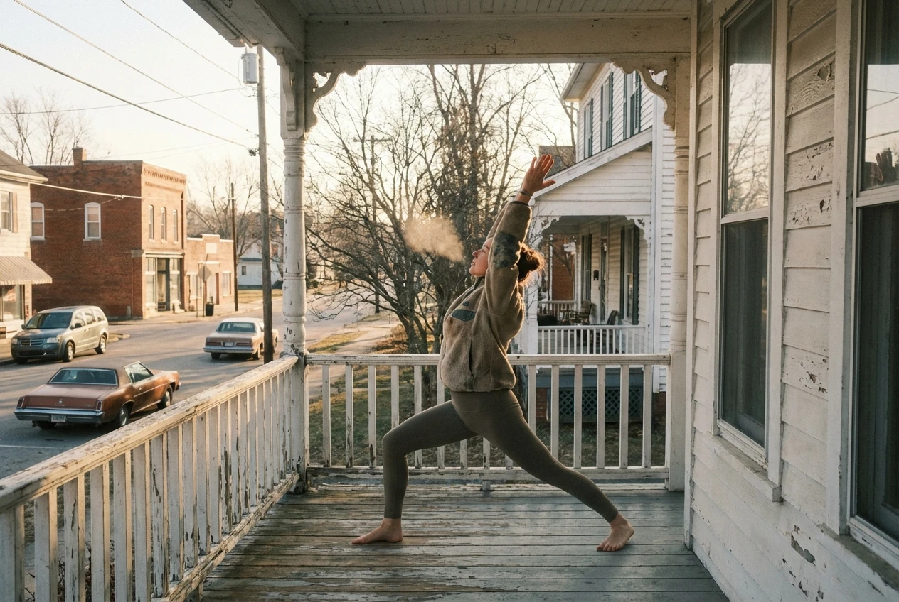

I've been teaching yoga for twenty years. I've studied in India, California, New York. I've led workshops on alignment, philosophy, breath work. I know all the Sanskrit names. I can demo poses most people can't pronounce. And my favorite yoga practice is five minutes on my porch in Ravenswood, West Virginia, doing the simplest stretches imaginable.
When people ask about my practice, they expect something elaborate. A specific lineage. A dedicated routine. The truth is simpler and less impressive: I wake up, make coffee, and while it brews, I step out onto my porch and stretch.
The porch is nothing special. Painted wood, a little uneven, faces River Road. In summer it's humid by sunrise. In winter it's cold enough that my breath fogs. That's the point. I'm not in a heated studio. I'm not on a sticky mat. I'm just outside, in weather, in morning, in my body.

Yoga isn't about the fancy poses. It's about showing up to your body with honesty and paying attention to what it needs right now.
I don't follow a sequence. Some mornings I fold forward and let my spine decompress. Some mornings I twist side to side, feeling my vertebrae wake up. Some mornings I just stand in mountain pose and notice how my weight settles through my feet onto these old boards.
Five minutes. That's it. I've done two-hour practices. I've held headstand for ten minutes straight. I've sweated through ninety-minute power classes. But this—this barefoot porch stretching before the town wakes up—this is the practice I return to. The one I never skip.
There's no performance here. No one watching. Bill might be up down the street, but he's doing his own quiet morning thing. The river's doing its thing. The birds are starting their thing. And I'm doing mine—reaching my arms up, feeling the cool air, noticing which parts of me are tight today, which parts are open.
Sometimes my hip aches from the long drive back from teaching somewhere. Sometimes my shoulders are tight from carrying workshop materials. Sometimes everything feels fluid and easy. The stretching isn't about achieving anything. It's about checking in. Saying good morning to this body that carries me through everything.
I teach complex practices to students. We work on challenging poses, subtle adjustments, philosophical concepts. That work matters. But if I had to choose just one practice for the rest of my life, it would be this: five minutes, my porch, whatever my body needs, no agenda.
People ask how to start a yoga practice. They think they need to buy special clothes, find the right class, wait until they're flexible enough. I tell them: step outside tomorrow morning and stretch for five minutes. Pay attention to what you feel. Do it again the next day. That's yoga.

The word yoga means union—joining body and breath and attention. You don't need a studio for that. You don't need a teacher. You need five minutes and honesty and a willingness to show up to yourself as you are right now.
My porch practice isn't photogenic. It won't get likes on social media. It's not the kind of yoga that looks impressive or sells workshops. It's just me at 5:45 AM, in whatever weather, finding out how I am today. Listening. Adjusting. Breathing.
Yesterday it was 34 degrees. I stepped out barefoot, reached my arms up, felt the cold wood under my feet and the cold air in my lungs. I did three sun salutations—slow, simple, nothing fancy. My coffee was ready when I came back in. My body was awake. My day had started with attention instead of rushing.
That's the practice. Not the advanced stuff I teach. Not the workshops I lead across the country. Just five minutes on a porch in West Virginia, remembering that yoga isn't about impressive poses—it's about showing up to your life with presence.
Every single morning. Five minutes. My porch. My body. My practice.


{kind=link}
Bill Henderson
10 Dec 2024My porch sees the same morning, Evie. Some days I sit with coffee and just watch the river fog lift. Other days my knees complain enough that I stand and sway a bit. Seventy-three years and I'm still learning what this body needs each morning. Five minutes of honesty—you said it right.
REPLYMaya Chen
10 Dec 2024Reading this while drinking coffee on my own porch. You're right—I've been overcomplicating things. Tomorrow morning: five minutes, bare feet, whatever my body needs. That's the whole plan.
REPLYTom Richardson
10 Dec 2024I run past your porch most mornings around 6. Sometimes I see you out there. Never wanted to interrupt. Now I understand what you're doing—checking in before the day takes over. Maybe I should do the same before I lace up.
REPLYSarah Mitchell
10 Dec 2024The inn has a side porch that catches morning light. I always meant to use it for something other than storing brooms. This might be exactly what that space is waiting for.
REPLYEmma Clarke
11 Dec 2024I've been intimidated by yoga because I can't touch my toes. But this isn't about that at all, is it? It's about paying attention. That I can do.
REPLYGrace Patterson
11 Dec 2024At 71, my body gives me plenty of feedback about what it needs. Most mornings it's slower than I'd like. But you're right—five minutes of listening is better than ignoring it entirely. My sun porch might be big enough for this.
REPLYDorothy Mitchell
11 Dec 2024Used to do this with my late husband on the back porch. He'd stretch his back, I'd stretch my shoulders. We never called it yoga. We called it "morning maintenance." Same thing, I suppose.
REPLYCatherine Reeves
12 Dec 2024The phrase "showing up to your body with honesty" is going to stay with me. I've been showing up with expectations and disappointment for years. Maybe it's time to try honesty instead.
REPLYRobert Chen
12 Dec 2024Maya showed me this. I'm not a yoga person—never will be. But five minutes of stretching before the day starts? That's not yoga, that's just common sense. Even I can do common sense.
REPLYMarcus Johnson
13 Dec 2024The barbershop doesn't open until 9, but I'm usually there by 7:30 prepping. Never thought about using that quiet time for anything but coffee. Tomorrow I'm stepping outside first.
REPLYAnnie Walsh
13 Dec 2024I teach spinning classes but my own body is always an afterthought. The irony isn't lost on me. Starting tomorrow—five minutes on my back steps before the baby wakes up.
REPLYIris Yamamoto
14 Dec 2024Wednesday meditation at my place usually starts with everyone stretching out their day. Maybe I should start my own mornings the same way. Union of body and breath—exactly what we try to find together.
REPLYJacob Torres
14 Dec 2024Tom and I run at 6am. Maybe we both need to add five minutes of porch time first. My hamstrings would certainly thank me.
REPLYElena Martinez
15 Dec 2024After night shifts at the ER, my body is a mess of tension. I've been going straight to bed, but maybe I need these five minutes first. A transition between work-body and rest-body. Going to try it tonight when I get home.
REPLY